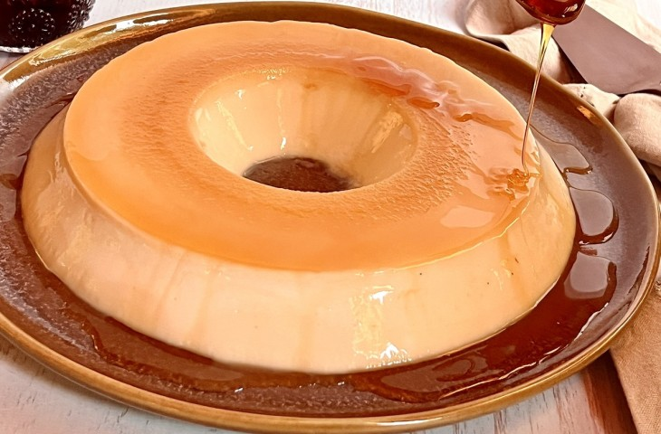

Suspiro
Muito consumido em festas, o suspiro é um doce muito saboroso. Venha aprender essa opção cremosa e simples de preparar
Beijinho
O beijinho é um doce que lembra muito a casa da vó.
Brigadeiro
Esse docinho fácil pode ser consumido sozinho, como um aperitivo, ou você pode usá-lo para incrementar bolos e mousses
Danoninho
Uma opção mais prática é essa versão preparada sem forno. Ele deve ser levado à geladeira por algumas horas para obter a consistência desejada e pronto!
Palha Italiana
Não tem segredo para fazer a palha italiana, basta ter paciência para esperar a mistura adquirir a consistência adequada.
Pudim
Essa delícia é feita com apenas 4 ingredientes baratinhos. Uma sobremesa democrática para degustar em qualquer período do ano,